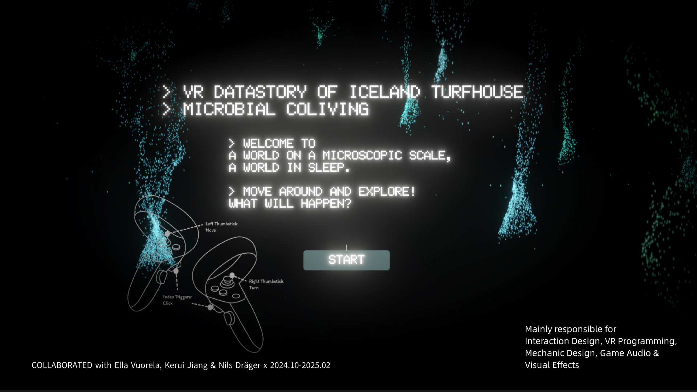
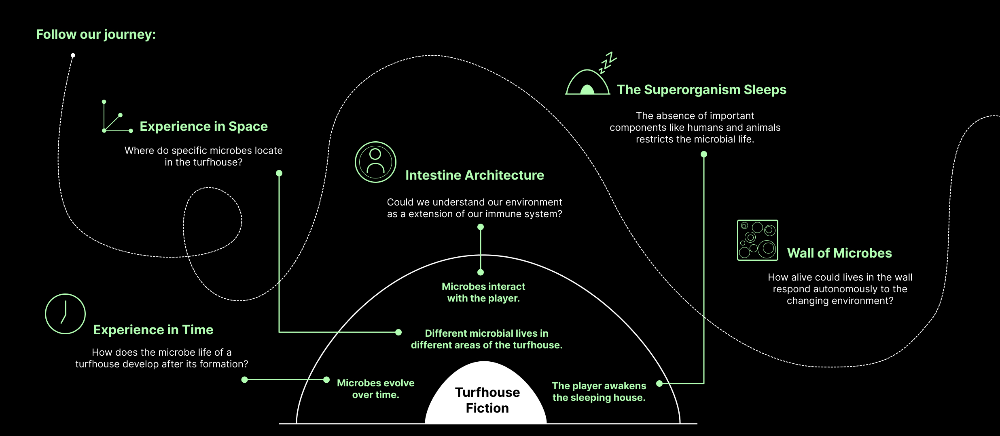
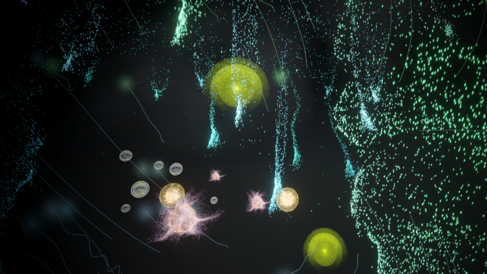
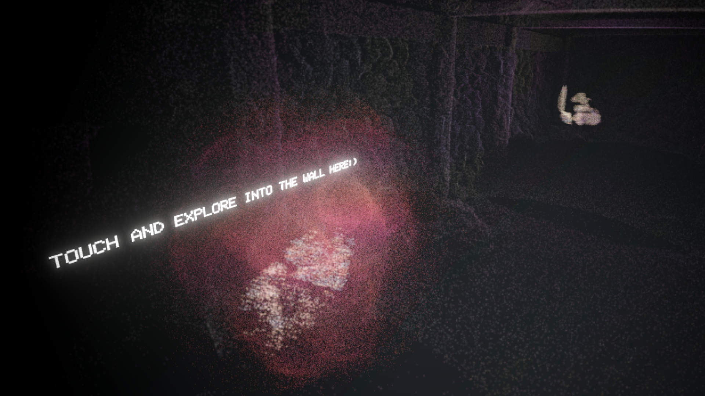
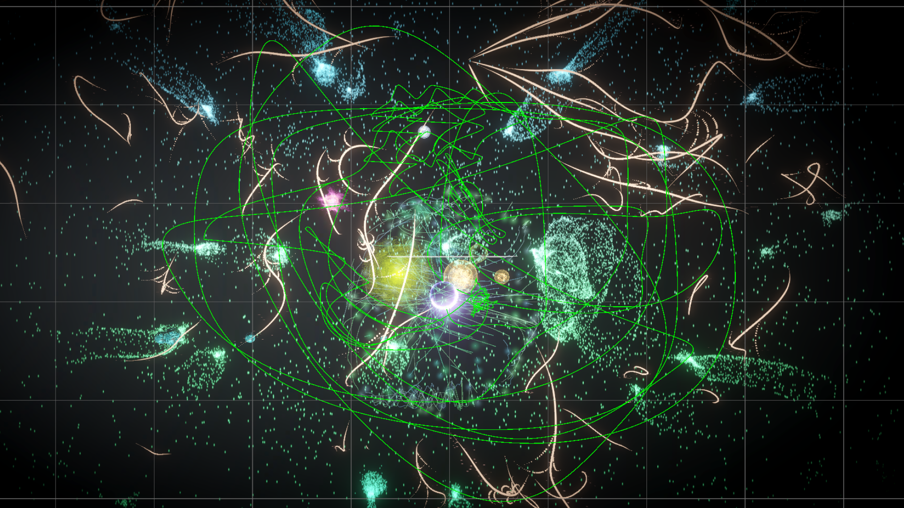
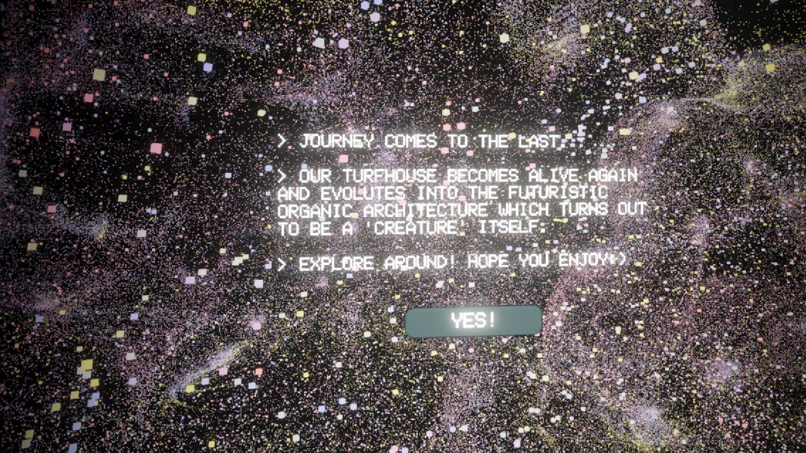
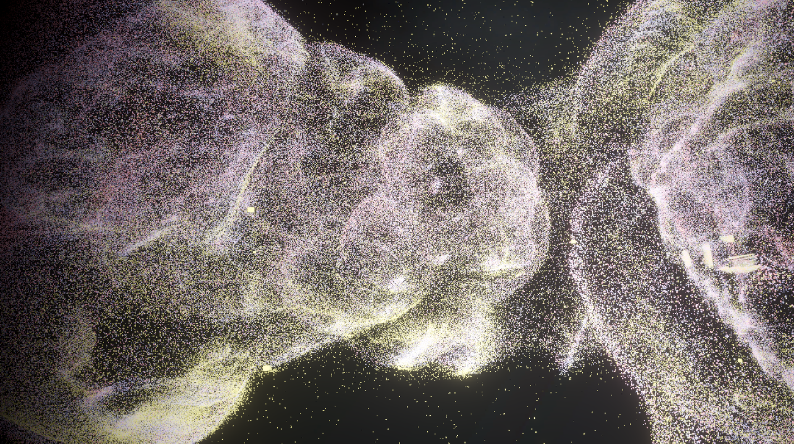

Intestine Architecture treats a building as a body. Built from LiDAR scans of a real Icelandic turf house, it turns architecture into a dormant microbiome that the visitor wakes — and asks a question with no comfortable answer: could we understand our environment as an extension of our own immune system?
00Executive Summary
What this piece is, and why it works‘Intestine Architecture’ is a point-cloud narrative in VR in which the turf house superorganism is dormant. When the visitor enters the house for the first time it appears quiet and lifeless. By exploring, the visitor gradually restores the various uses of its spaces, and thereby reawakens the microbial diversity it once harboured.
- The building is the body. The proposition is never stated in a caption — it is built into the mechanic. The visitor travels through the walls, and the act of restoring the house's microbiome is literally an act of restoring an immune system.
- The data is real, not imagined. A week of fieldwork in Iceland, two days LiDAR-scanning the Keldur turf house, plus physical sampling to identify the microbial life already present — with every sampling point marked on a floor plan. The point cloud is a record of an actual building.
- Scale is the interface. The journey moves between microbe scale and human scale instead of relying on menus or HUDs: the wall becomes a portal, the room becomes a habitat, and the house ends as a creature.
- Sound carries the narrative. All five stages have a defined soundscape — distant humming and crumbling, then human activity, then chaos — so the story keeps advancing even when the visitor is only looking around.
- The ending is open by design. The arc is explicitly labelled an open ending: the turf house evolves into a futuristic organic structure that “turns out to be a ‘creature’ itself”, leaving the visitor to speculate rather than be told what it means.
| Format | Point-cloud narrative in VR · speculative design · data storytelling |
| My role | Interaction design · VR programming · mechanic design · game audio · visual effects |
| Team | 4 people — Yihan Lou, Ella Vuorela, Kerui Jiang, Nils Drager |
| Period | October 2024 – February 2025 |
| Site | Keldur turf house, Iceland |
| Pipeline | LiDAR scan → RISCAN PRO → Houdini → Unity (VR) |
| Deliverables | Playable VR experience · trailer · recorded walkthrough · field sampling data |
01Key Points
The five arguments the piece is makingRepresentations of the Invisible
The experience invites players to interact with a virtual representation of microbial ecosystems — entities that are integral to life yet invisible to the naked eye.
Blurring the Organic and the Artificial
As the turf house evolves into a pulsating, organic structure, it raises critical questions about the merging of biological and artificial systems.
Immersion in Constructed Realities
By letting users explore microbial life at microscopic scale and witness its transformation, the project illustrates the fluid boundary between what is “real” and what is digitally constructed.
Speculation on Future Architectures
The reimagined turf house challenges traditional notions of architecture, proposing a future in which interspecies collaboration and organic adaptability replace rigid, static forms.
Interspecies Collaboration and Adaptability
By exploring how architecture might evolve to incorporate biological elements, the project critiques the current human-centric paradigm and proposes alternative ways of living.
Why an open question, not a claim
The piece was made to question existing realities rather than assert a new one — which is why it ends with speculation instead of a conclusion.
02Concept & Provocation
The question that generated the whole pieceEverything in the experience descends from one provocation — could we understand our environment as an extension of our immune system? To make that answerable rather than merely poetic, it was split into two research axes that could each be explored independently.
Experience in Space
Where do specific microbes locate in the turf house? Different microbial lives occupy different areas — so spatial movement through the building is also movement through a habitat.
Experience in Time
How does the microbial life of a turf house develop after its formation? Microbes evolve over time — so the visit is staged as a life cycle, not a tour.
| Premise | Meaning in the experience |
|---|---|
| The Superorganism Sleeps | The absence of important components such as humans and animals restricts the microbial life — so the house begins dormant. |
| Wall of Microbes | How alive could the lives in the wall respond autonomously to the changing environment? The wall is not scenery; it is the first habitat the visitor meets. |
| Turf House Fiction | Where the two axes converge: an extrapolated turf house that is no longer a building but an organism. |
Split the provocation into two independent axes. Asking one abstract question (“is environment part of the immune system?”) produces an essay. Splitting it into a spatial axis and a temporal axis produces two orthogonal structures for content — where you are and when you are — that can be designed separately and then recombined. That split is what made a five-stage journey possible without any exposition.

03Fieldwork & Data Pipeline
Where the data came fromThe point cloud is not an art asset — it is a survey. We spent a week on fieldwork in Iceland, of which two days were spent studying the Keldur farmhouse: scanning the interiors of the turf houses to create the point-cloud data for the VR experience. In parallel we collected samples to identify the microbial life already present inside the houses, with the exact sampling points marked on a map so that every glowing organism in the final piece can be traced back to a location where it was actually found.
LiDAR survey on site
Keldur turf house interiors scanned over two days; individual sampling points recorded on a floor plan.
RISCAN PRO
Raw scans registered and exported as point-cloud data.
Houdini
Point clouds cleaned, optimised and pre-processed for real-time use.
Unity
Reassembled as an explorable VR runtime, with VFX and audio layered onto the scans.

Ground the speculation in a real survey. Speculative design loses its force the moment the world it describes is arbitrary. Anchoring the experience in a genuinely scanned building — and in microbes actually sampled from that building — means the speculative layer sits on top of documentary evidence. The visitor is not asked to accept an invented world; they are asked what a real world might become.
04Narrative Architecture
Five stages, two scales, four emotional beatsThe experience runs as five stages along a single life-cycle arc. Each stage is specified in four dimensions — scene, scale, interaction and soundscape — so that the story is carried by the environment rather than by instruction. The most important variable is scale: the visitor crosses from microbe scale to human scale and back again, and that crossing is what makes the building read as a body.
| Stage | Scale | Interaction | Soundscape |
|---|---|---|---|
| 1 — Inside the Wall | Microbe | Looking around and moving forward; distant humming, cracking and crumbling. | Distant humming, cracking and crumbling. |
| 2 — Microbe Groups Appear | Microbe | Looking around; touching the lights moves them slightly further. | Sounds build up with each appearing microbe group, reflecting the sounds of microbial interactions. |
| 3 — In the Turf House | Microbe → human | As the visitor reaches the end of the linear wall, they are teleported into the turf house. | Sounds of human activities. |
| 4 — Wake up the House | Human | Walking around the turf house, using the glittering dots in its immune system to wake it again. | The sound of fading, then the sound of lighting. |
| 5 — The “Super-organism” Reawakens | Human | The visitor can explore the transformed house and alter the shape of the building. | Sound of human and animal activity (walking, running, animal noises), then the sound of chaos. |
Four emotional beats
Birth and Growth
The wall comes alive; microbial groups appear and multiply.
Leave
The visitor is pulled out of the wall and into the house at human scale.
Come back
Returning to the house, the visitor finds it changed and begins to wake it.
Reawake
The superorganism returns — and the arc opens out rather than resolving.

Specify the soundscape as a story layer, not as polish. In VR, the visitor can look anywhere — which means visual framing cannot be relied upon to sequence events. Giving every stage an explicit soundscape (humming → microbial interaction → human activity → chaos) creates a narrative spine that survives the visitor looking the wrong way. The audio was therefore designed as the primary storytelling channel, with visuals as the reward.
05Interaction Design
How eight scenes were specifiedEvery scene in the experience was storyboarded using the same three-row template — Scene, Action, Player. The third row is the one that matters: writing down what the visitor is doing at each moment forces the design to remain an experience rather than a sequence of images.
| # | Scene | Action | Player |
|---|---|---|---|
| 01 | Start screen | The experience begins in the void (wall). The player finds only emptiness. | After pressing “Start”, they are free to explore. |
| 02 | Transition into the lifeless turf house | After the player passes through a portal, they find themselves inside the turf house. | The player explores the rooms. |
| 03 | Discovery of microbiotic life | While exploring, certain areas suddenly begin to glow. | The player touches the glowing area. |
| 04 | Back into the void | The player can now admire the microbes they previously found in the house at life-size. | The player walks closer to see the microbes. |
| 05 | Transition to the turf house scale | The house shows subtle changes. New areas can now be explored. | The player interacts with microbial communities. |
| 06 | Transition to the microscopic scale | More and more microbes are flying around in the void. They seem to be interacting with each other. | The player attempts to touch the microbes. |
| 07 | The resilient microbiome | The void is filled with microbes; VFX effects represent symbiotic connections. | The player is a passive observer. |
| 08 | Final stage of the turf house | The turf house transforms into an organic-looking structure with pulsating heartbeat. | The player can alter the shape of the building. |
Controls
Movement is deliberately minimal so that attention stays on the environment: left thumbstick to move, right thumbstick to turn, and index triggers to click — the only three inputs the visitor ever needs.

Write the player's verb for every beat. A storyboard that only describes scenes produces beautiful panels and a passive experience. Adding a dedicated “Player” row to every scene surfaced two decisions that shaped the whole piece: that the climactic scene (07) should deliberately make the visitor a passive observer, and that the final scene (08) should hand control back so the visitor can alter the building's shape. Passivity and agency became deliberate beats, not accidents.
06Visual Language
In-experience stillsThe visual system is built from the scan data itself: point clouds are not hidden as a technical artefact but used as the surface of the world, with glowing microbial clusters and VFX-drawn symbiotic connections layered on top. The result reads as both a survey and an organism — which is exactly the ambiguity the piece is arguing for.





07Video Presentation
See the experience runningVideo walkthrough
08Team & Credits
Who made itYihan Lou
Interaction design and the five-stage narrative structure, VR programming in Unity, core mechanics, game audio design and the visual effects layer.
Ella Vuorela
Project collaborator.
Kerui Jiang
Project collaborator.
Nils Drager
Project collaborator.
09Takeaway
What transfers to other workThe most transferable decision in Intestine Architecture was to make the argument structural rather than verbal. Every claim the piece makes — that a building can be a body, that the organic and the artificial are already merging, that scale determines empathy — is delivered through mechanics, scale and sound rather than through explanation. A visitor who never reads a single word still leaves having crossed from microbe scale to human scale and back. In an immersive medium, that is the difference between illustrating an idea and letting someone inhabit it.